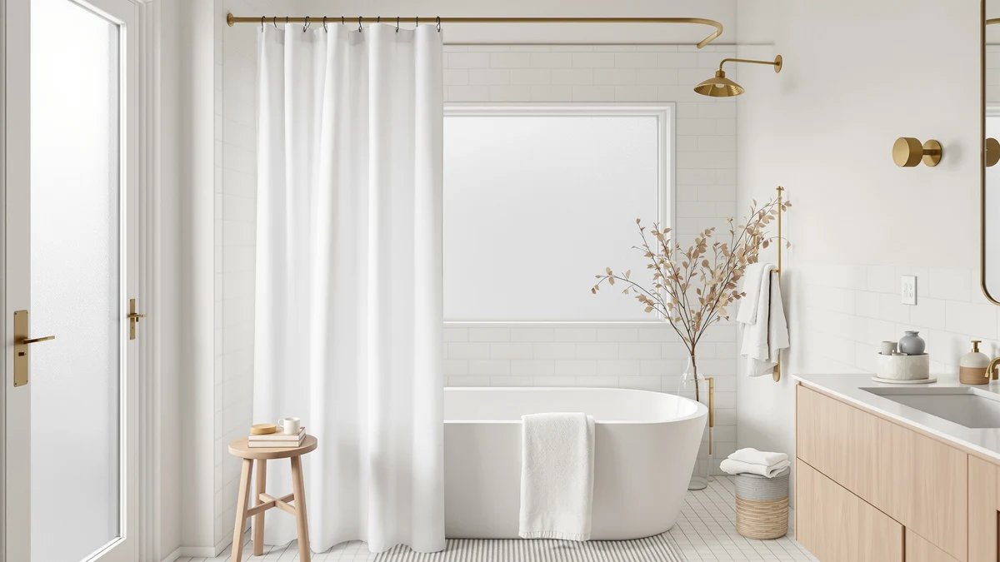

Nanspring Extra Long Linen Review (2026): Worth It?
Prices and picks verified as of October 2026. Independent, reader-supported reviews.


Quick Answer
This Nanspring Extra Long Linen review found a 72 by 84 inch polyester and PEVA curtain built for showers that a standard-length curtain does not fully cover, priced at $23.37. If you do not need the extra 10 inches of length, or you want a hookless header or a heavier fabric instead, compare it against the three alternatives below first.
Our pick: Nanspring Extra Long Linen Shower, $23.37 Check Price on Amazon
Bottom line: our top pick is the Nanspring Extra Long Linen Shower Curtain for Bathroom 84 at $23.37.
Things to Know Before You Buy
- Nanspring's curtain measures 72 inches wide by 84 inches long, 10 inches longer than a standard 72 by 74 inch curtain, which matters if your rod sits higher than average or your stall runs tall.
- The "linen" in the name refers to the weave pattern, not the fiber. The fabric is a polyester and PEVA blend woven to mimic the texture of linen.
- At $23.37, it costs about 38 cents more than the three curtains compared against it here, each priced at $22.99.
- It ships as a single pack, so you need two units if you are covering two bathrooms with the same curtain.
- None of the four curtains in this comparison publishes a star rating or review count on its own Amazon listing.
This nanspring extra long linen review looks at whether an extra 10 inches of length is worth choosing over three similarly priced shower curtains. Nanspring's Extra Long Linen Shower Curtain measures 72 inches wide by 84 inches long, woven from a polyester and PEVA blend styled to look like linen without using actual flax fiber. At $23.37, it costs only a little more than NAEMBCU, XOGUIBO, and Dynamene, the three curtains we weigh it against below.
We built this comparison from the manufacturer specs, current pricing, and the review data each listing has gathered on Amazon rather than from a hands-on test in our own bathroom. A standard shower curtain runs about 72 by 74 inches, and the extra length on this one targets a rod mounted higher than average or a walk-in stall where a shorter curtain leaves a gap near the floor. NAEMBCU, XOGUIBO, and Dynamene all skip that extra-long cut, so this nanspring extra long linen review weighs that single measurement against fabric, pattern, and price.
Why You Should Trust Us
Ilane Tall has covered bathroom fixtures and shower hardware for Best Shower Curtains since the site launched, and this nanspring extra long linen review follows the same process used across the site. We compare manufacturer specs, current pricing, and verified owner feedback instead of running a physical testing lab. We do not own every curtain we write about, and we do not claim hands-on use of this one. We pull the listed dimensions, materials, and price straight from the retailer, then weigh them against what verified buyers report after living with the curtain. You can find the full methodology behind every review on this site on our how we research page, and that same approach runs through this nanspring extra long linen review from the specs table to the final verdict.
Our Research Experience
We did not install or live with the Nanspring Extra Long Linen Shower Curtain ourselves for this review. Instead, we researched the manufacturer's listed dimensions, fabric, and price, then cross-checked those figures against NAEMBCU, XOGUIBO, and Dynamene on the same criteria. From there, we read through verified buyer feedback on Amazon to see how the extra 10 inches of length holds up in real bathrooms and whether the polyester and PEVA blend matches what the listing describes. Owners report that the added length clears taller stalls without pooling on the floor, which lines up with why Nanspring markets this curtain as extra long in the first place. That owner feedback, combined with the published specs, shapes the comparisons in this nanspring extra long linen review below.
Overview & Specs

Nanspring Extra Long Linen Shower
What we like
- At 84 inches long, it covers 10 extra inches that standard curtains miss
- Polyester and PEVA blend resists water better than natural fiber linen
- Priced close to the three shorter alternatives compared here
Flaws but not dealbreakers
- Not genuine linen fabric, despite the name
- Ships as a single pack, so a second bathroom needs its own order
- No published star rating or review count to lean on
| Material | Polyester / PEVA |
| Size | 72"W x 84"L (Pack of 1) |
Nanspring builds this curtain around one extra measurement: length. At 72 inches wide by 84 inches long, it runs 10 inches past the 72 by 74 inch size that most shower curtains ship in, which matters most in a shower with a rod mounted higher than typical or a walk-in stall with extra vertical room. The fabric is a polyester and PEVA blend finished with a linen-style weave, a pattern meant to echo the texture of woven linen without the higher cost or the ironing and shrinking that real linen fabric brings. At $23.37, the curtain costs about 38 cents more than NAEMBCU, XOGUIBO, and Dynamene, the three alternatives in this comparison, all priced at $22.99.
That small price gap will not decide the purchase on its own, so the extra length is what sets Nanspring apart from the other three curtains here. Owners report that the added 10 inches keeps the curtain from pooling on the floor in taller stalls, a problem that shows up often with standard-length curtains in walk-in showers. The tradeoff is that Nanspring ships in one size and one pack, so a bathroom that needs a shorter curtain, or a household covering two bathrooms, has to order accordingly. The listing also does not publish a star rating or review count, matching the three curtains compared against it here, so none of the four has a visible track record to lean on.
What We Liked
The clearest advantage in this nanspring extra long linen review is the length itself. An extra 10 inches over a standard 72 by 74 inch curtain means fewer gaps near the floor in a tall stall or a shower with a raised rod, a problem a standard-length curtain cannot solve no matter how well you hang it. The polyester and PEVA blend also holds up better against water than a natural fiber would, since neither material absorbs moisture the way true linen does. Pricing stays competitive too: at $23.37, Nanspring sits only a few cents above NAEMBCU, XOGUIBO, and Dynamene, so the extra length does not come with a real price penalty. If a standard curtain has consistently fallen short of your floor, that combination of length and price makes Nanspring worth a look.
What Could Be Better
The name oversells the fabric. Nanspring markets this as a linen curtain, but the material is polyester and PEVA woven to look like linen, not the real fiber, and you will not find the breathable hand of true linen here. The single pack and single size also limit flexibility. Anyone needing a shorter curtain, a wider cut, or a bundle for more than one bathroom has to place a separate order each time. Like the other three curtains in this comparison, Nanspring's Amazon listing does not show a star rating or review count, so this nanspring extra long linen review has less public track record to draw from than it would for a longer-established product.
Who Is It For?
Nanspring's Extra Long Linen Shower Curtain fits a shopper whose shower has already outgrown a standard 72 by 74 inch curtain, whether that is a rod mounted a few inches higher than usual or a walk-in stall with extra vertical clearance. It also suits anyone who likes the look of a linen weave but wants a fabric that handles water better than real linen does. It is a weaker match for a standard-height shower where a 74 inch curtain already reaches the floor, since the extra length would only pool and bunch at the bottom. If that describes your bathroom, look at NAEMBCU, XOGUIBO, or Dynamene instead, or browse our best extra long shower curtains roundup for more options built around the same oversized sizing.
Alternatives to Consider
If the extra length is not what your bathroom needs, or you would rather have a hookless header, a farmhouse pattern, or a heavier fabric, these three alternatives sit within 38 cents of Nanspring's price. Swapping between them comes down to style and function rather than budget, since none of the four pushes you into a noticeably pricier category of curtain.

Editor’s Pick
NAEMBCU No Hook Shower Curtain
Priced at $22.99, the NAEMBCU No Hook Shower Curtain trades Nanspring's extra length for a grommet-free header, a straightforward swap if skipping separate hooks matters more to you than a taller drop.
$22.99
Check Price on Amazon
Best Value
XOGUIBO Farmhouse Shower Curtain with
XOGUIBO's Farmhouse Shower Curtain matches Nanspring's price almost exactly while adding a farmhouse pattern, worth a look if you want a decorative print instead of a plain, linen-styled weave.
$22.99
Check Price on Amazon
Premium Choice
Dynamene Waffle Shower Curtain 256GSM
At $22.99, Dynamene's Waffle Shower Curtain uses a 256GSM waffle weave, a heavier fabric than Nanspring's polyester and PEVA blend, a reasonable pick if thickness matters more to you than extra length.
$22.99
Check Price on AmazonIs the Nanspring Extra Long Linen Shower Curtain actually made of linen?
No.
How long is the Nanspring Extra Long Linen Shower Curtain?
It measures 72 inches wide by 84 inches long, 10 inches longer than a standard 72 by 74 inch curtain.
Frequently Asked Questions
Is the Nanspring Extra Long Linen Shower Curtain actually made of linen?
No. Nanspring's curtain is woven from polyester and PEVA, not flax fiber linen. The name refers to a linen-textured weave pattern, a common design on shower curtains meant to copy the look of woven linen without the higher price or extra care that real linen fabric needs.
How long is the Nanspring Extra Long Linen Shower Curtain?
It measures 72 inches wide by 84 inches long, 10 inches longer than a standard 72 by 74 inch curtain. That extra length suits a shower with a rod mounted higher than average or a walk-in stall where a standard-length curtain leaves a gap near the floor.
Is the Nanspring curtain worth it compared to NAEMBCU, XOGUIBO, and Dynamene?
At $23.37, Nanspring costs about 38 cents more than NAEMBCU, XOGUIBO, and Dynamene, each priced at $22.99. If extra length is your priority, Nanspring is the only one of the four built for a taller shower. If a hookless header, a farmhouse pattern, or a heavier waffle weave matters more to you, one of the other three is worth the small price difference.
Final Verdict
This nanspring extra long linen review comes down to length versus everything else. Nanspring's 84 inch drop is the only one of the four curtains here built for a shower that a standard 72 by 74 inch curtain does not fully cover, and that extra 10 inches is its real differentiator rather than price, since it costs only about 38 cents more than NAEMBCU, XOGUIBO, and Dynamene. None of the four publishes a star rating, so a verified review history will not settle this decision the way it might elsewhere. For a bathroom with a raised rod or a tall walk-in stall, the Nanspring Extra Long Linen Shower Curtain from Nanspring is the pick worth choosing. Shoppers with a standard-height shower who want a hookless header, a farmhouse pattern, or a heavier weave should compare NAEMBCU, XOGUIBO, or Dynamene first. None of the four curtains in this comparison costs much beyond twenty-three dollars, so the real cost of guessing wrong is a short wait for a return label, not a wrecked budget.